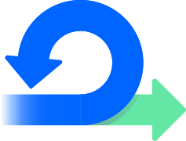
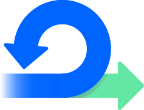

Márcia Simplício
Back-end Developer - Node.js
Sou uma Desenvolvedora Back-end, especialista nas linguagens de programações JavaScript ao lado do servidor, o runtime Node.js e em MYSQL com enfoque nas frameworks Express.js e Nest.js.
Gosto de participar de projetos com outros desenvolvedores até o deploy da aplicação.
Possuo conhecimentos em Front-end e me especializei no Back.
Amo tecnologia, estudo diariamente para me tornar cada vez melhor e
continuar escrevendo códigos limpos e tendo boas práticas, além de
sempre me manter atualizada.
Atualmente faço freelance de cloud Computing na empresa Save In Cloud.
Atualmente estou no primeiro período de Análise de Desenvolvimento de Sistemas na Faculdade Unicesumar, com término previsto para Agosto de 2025.
My Hard Skills
Front-end
Back-end
Databases
Frameworks
Tools
Metodologias Ágeis

 
